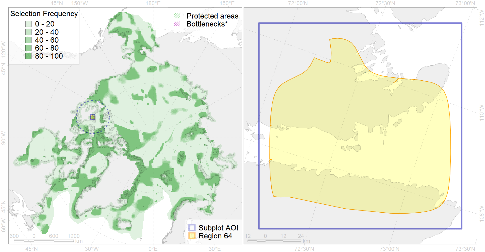

Region 64
Region 64
“ArcNet” scenario 33 achievement for region 64.
Use Accenter for advanced mode.

0
CFs inside of Region completely
0
CFs inside of Region at quarter
0
Complete-targets achievement by Region
1
Half-targets achievement by Region
| CF | Name | Target Achievement for Region | Proportion of Target Achievement in Region | Amount Proportion in Region |
|---|---|---|---|---|
| 9018 | polar bear of the VM (Viscount Melville Sound) subpopulation distribution | 60.9% | 57.5% | 23.9% |
| 9036 | polar bear denning areas of VM (Viscount Melville Sound) subpopulation | 21.5% | 21.4% | 16.8% |
| 6010 | Brent goose (Branta bernicla nigricans) American breeding&moulting grounds | 7.4% | 5.2% | 2.1% |
| 2004 | Bearded seal whelping areas in the south of the Canadian Archipelago | 5.5% | 4.9% | 1.7% |
| 3050 | Multiyear Ice distribution in September in the Beaufort Sea LME | 6.3% | 4.1% | 1.4% |
| 7024 | Western Canadian archipelago region | 8.3% | 7.0% | 1.4% |
| 2036 | Ringed seal foraging areas in the Beaufort Sea | 3.8% | 1.7% | 1.1% |
| 2042 | Ringed seal whelping areas in the Beaufort Sea | 3.7% | 1.7% | 1.1% |
| 3006 | Fast Ice distribution in the Canadian Archipelago region | 12.6% | 3.0% | 0.9% |
| 7134 | III.1.1. 1. Canadian Arctic Archipelago shelf | 8.5% | 1.4% | 0.8% |
| 7137 | III.1.1.4. Canadian Archipelago glacial troughs | 10.4% | 1.6% | 0.6% |
| 6066 | Common eider (Somateria mollissima v-nigrum) breeding&moulting grounds | 0.9% | 0.9% | 0.4% |
| 7133 | III.1. Canadian Arctic Archipelago shelf and margin | 6.8% | 0.6% | 0.3% |
| 7136 | III.1.1.3. Archipelago inner shelf of low and medium profile | 3.2% | 0.6% | 0.3% |
| 4074 | Fish zoogeography, Arctic Region, High-Arctic Shelf Province, Canadian-Greenland District (10A) | 2.7% | 0.4% | 0.3% |
| 4029 | Feeding area of the Arctic charr (Salvelinus alpinus), anadromous populations (F28) | 0.4% | 0.3% | 0.2% |
| 4053 | Range of the Fourhorn Sculpin (Myoxocephalus quadricornis) (F 45), Euro-Asian populations | 4.7% | 0.3% | 0.2% |
| 5015 | Beluga of the Eastern Beaufort Sea winter distribution | 0.2% | 0.2% | 0.1% |
| 4037 | Distribution of the Glacial cod (Arctogadus glacialis) (F34) | 0.7% | 0.2% | 0.1% |
| 3032 | Marginal Ice Zone distribution in July in the Beaufort Sea LME | 0.1% | 0.1% | 0.0% |
| 4041 | Range of the Polar Cod (Boreogadus saida) (F35) | 0.2% | 0.1% | 0.0% |